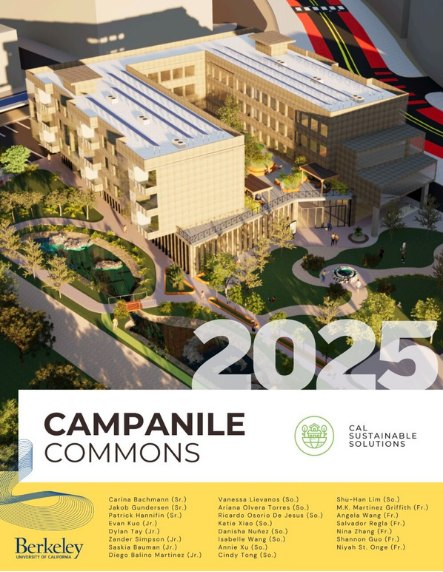
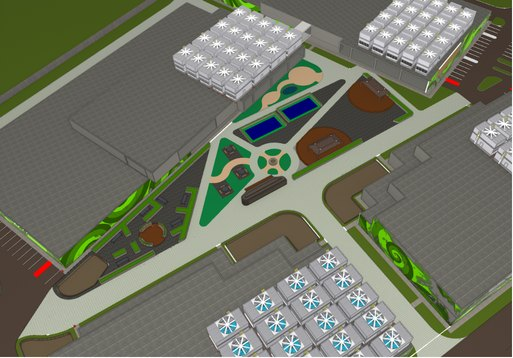

Competition
Campanile Commons
Cal Sustainable Solutions (ASCE), UC Berkeley · 2025 · 2nd Place, ASCE Nationals


The brief
Each year the team responds to a mock request for proposal with a complete sustainable development, then defends it in front of a judging panel. Campanile Commons was the 2025 entry. I work on the design side of the team.
My scope
I modelled the development in SketchUp, including the hydrogen fuel cells, the central community area, the buildings and the green walls, and helped produce the Twinmotion render that became the submission cover. I also ran material calculations and cost estimating for the proposal, and calculated the energy and water consumption of the green walls.
A decision and a tradeoff
I calculated the building loads to work out where machinery could sit. We wanted the solar panels on the roof alongside the hydrogen fuel cells, which would have kept generation close to the equipment it served and freed up ground area. The combined load was too great for the roofs, so we dedicated a section of the site to the panels instead. That buys a structure that works, but it costs usable land and separates the panels from the fuel cells they were meant to sit beside.